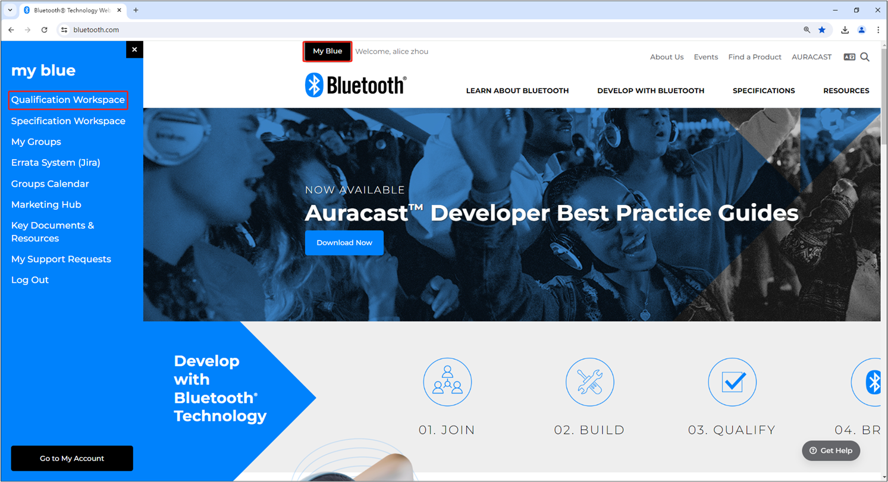
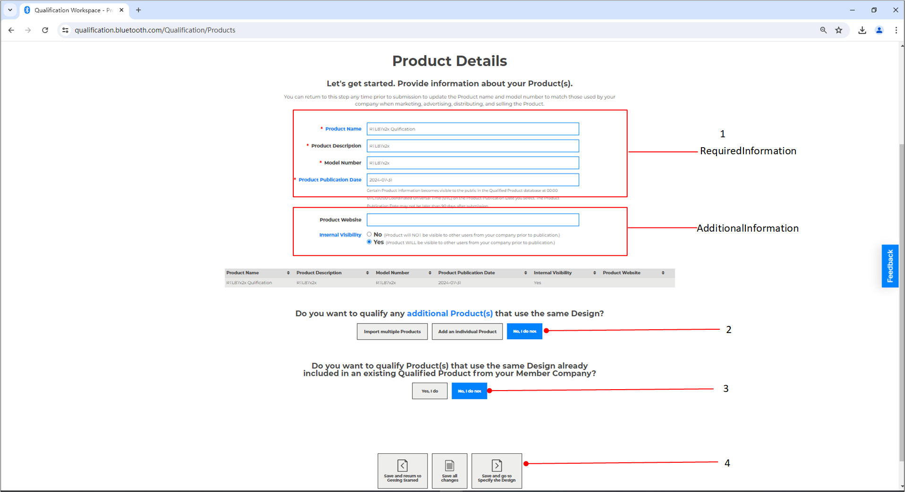
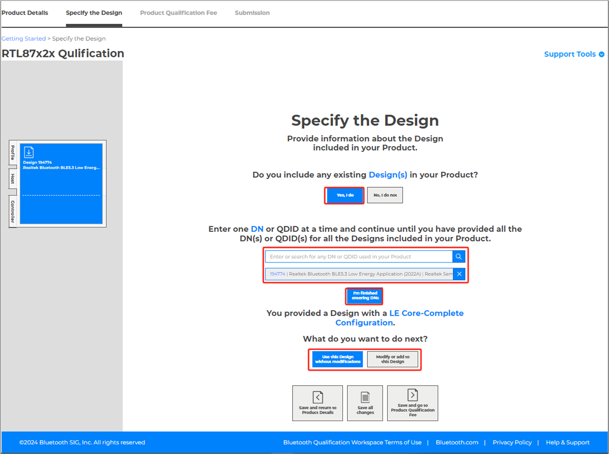
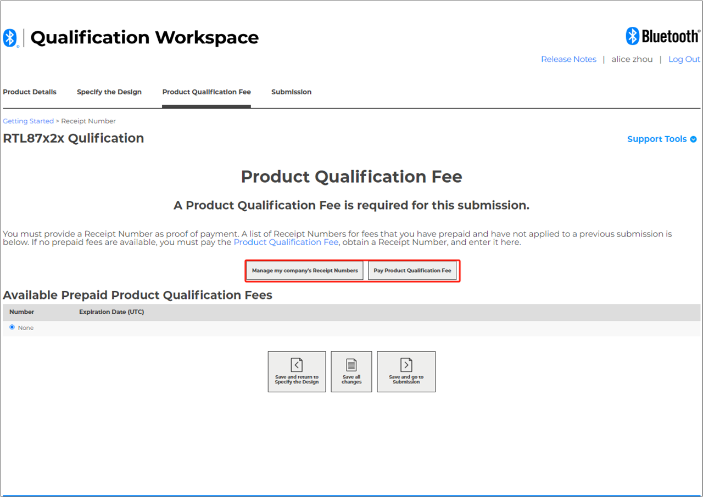
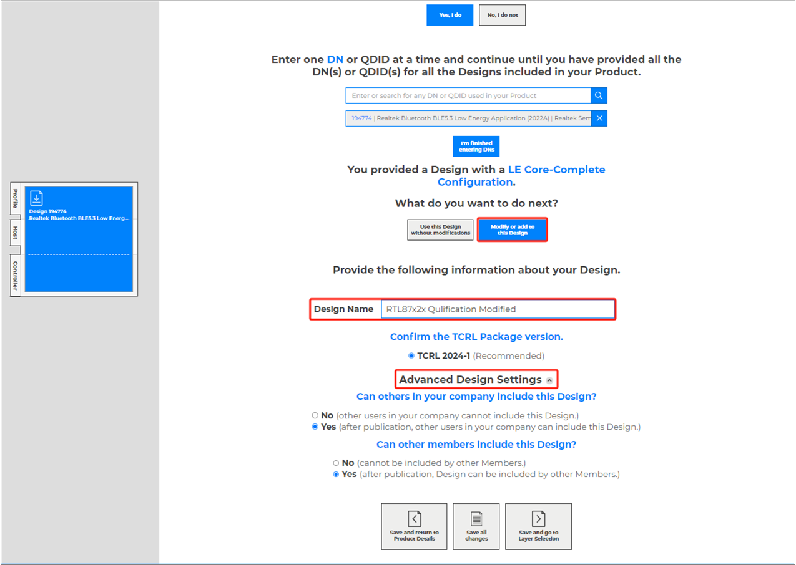
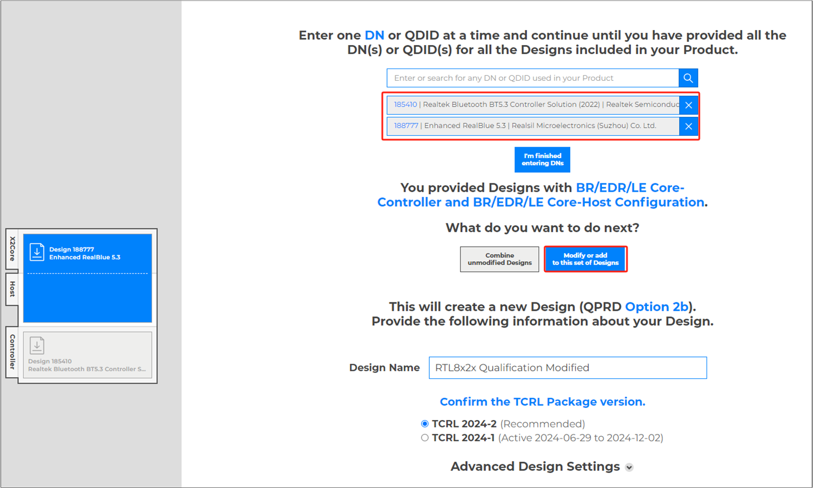
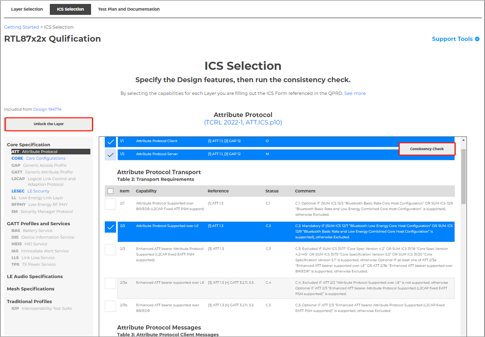
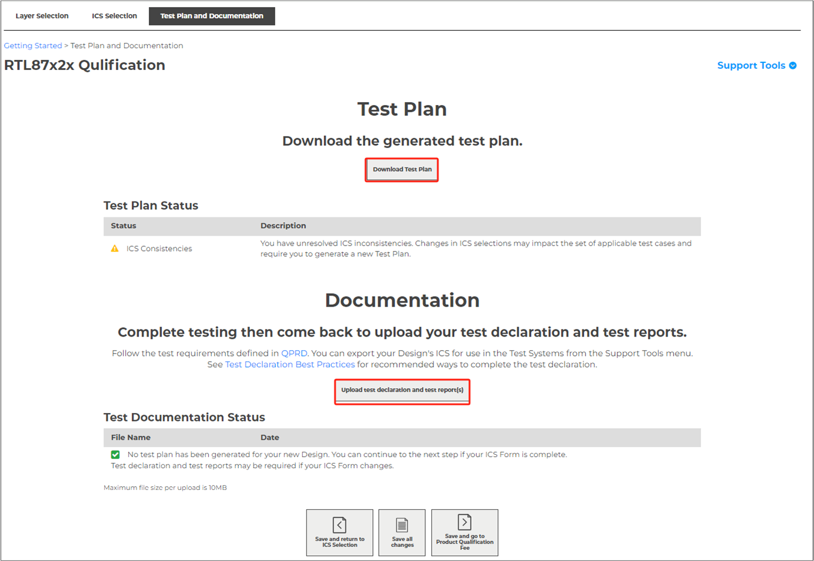
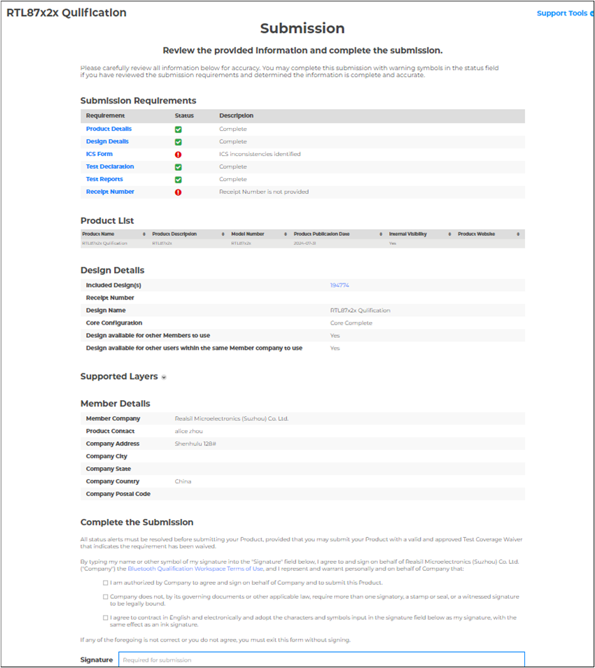

Bluetooth Qualification
This document introduces how to qualify and list your own products with minimal effort based on existing Realtek RTL8752x/RTL8762x/RTL8772x qualified designs. To sell a product with the Bluetooth® logo, the company must first ensure the product conforms to the Bluetooth Core Specification, and what's more, the product has been listed and the declaration has been completed.
For products based on the Realtek Bluetooth Low Energy application IC (RTL8752x/RTL8762x/RTL8772x) design, a new Design should be created by referring to the design. The Realtek Bluetooth Low Energy Solution integrates Bluetooth BLE stack to support BLE GATT-based profiles and services for different applications, such as sporting and fitness, Phone accessory, wearable, Remote Controller, smart home sensor, Mesh, IOT device application, etc.
Introduction
Realtek offers two solutions for Bluetooth Low Energy application IC:
Realtek BLE 5.4 Application Solution QDID 240440. For supportes Bluetooth profiles/protocols and services, refer to table GATT Profiles and Services Supported in QDID 240440.
Realtek BLE 5.3 Application Solution QDID 194774. For supportes Bluetooth profiles/protocols and services, refer to table GATT Profiles and Services Supported in QDID 194774.
Option Selection:
For Bluetooth Low Energy 5.4 products, If your product is an LE Bluetooth 5.4 device and the supported Bluetooth protocols and services align with those declared in QDID 240440, it is advisable to use the Realtek BLE 5.4 Application Solution QDID 240440. Again, choose RF testing as necessary. No further modifications or tests are required, and you can proceed directly to listing.
For Bluetooth Low Energy 5.3 products, if your product is an BLE 5.3 device and the supported Bluetooth profiles/protocols and services align with those declared in QDID 194774, it is recommended to use the Realtek BLE 5.3 Application Solution QDID 194774. You can choose to conduct RF testing based on your needs. No additional modifications or tests are required, and you can proceed directly to listing.
If your product does not fit into the above categories, you should use the Realtek BLE 5.4 Application Solution QDID 240440. Customize your solution according to the actual functions of your product. Complete the necessary tests as required by SIG, submit the evidence, and achieve final certification.
Note
Bluetooth® Compliance Program
Only members of the Bluetooth SIG are licensed to use the Bluetooth word mark, figure mark, and combination mark (collectively, the 'Bluetooth Trademarks'), as agreed to the Bluetooth Trademark License Agreement (BTLA). Members may use the Bluetooth Trademarks in association with their products and services, as well as in association with their company to promote their membership in the Bluetooth SIG. When the trademarks are used in association with a product, that product must have undergone and properly completed the Bluetooth qualification process.
Bluetooth® Compliance Program includes Bluetooth qualification and declaration which members complete to demonstrate and declare the products they build, qualify, brand, or mark and identify with its logo, and comply with the requirements of the Bluetooth license agreements.
The two licensing agreements are:
Bluetooth Patent & Copyright License Agreement: a reciprocal license between each Bluetooth SIG Member to the intellectual property that each member owns.
Bluetooth Trademark License Agreement: a license between the Bluetooth SIG (owner of the Bluetooth trademark) and each member with authorized use of the Bluetooth trademarks.
Companies are encouraged to review the conditions of the license agreements and consult their legal counsel with any questions regarding the applicable requirements. If a company wants to use the Bluetooth trademarks, the company must become a Bluetooth SIG member and complete the Bluetooth Compliance Program.
Terminology
Name |
Definition |
Description |
|---|---|---|
Bluetooth SIG |
Bluetooth Special Interest Group |
Bluetooth SIG is a non-profit organization responsible for overseeing the development of Bluetooth standards and the licensing of Bluetooth technologies. Founded in 1998, it comprises thousands of companies that work together to create and maintain Bluetooth technology. |
BQTF |
Bluetooth Qualification Test Facility |
An accredited test facility that can perform testing and produce test results for any Member, and Bluetooth SIG will accept the results for the purposes of the Bluetooth Qualification Process. |
BRTF |
Bluetooth Recognized Test Facility |
An accredited test facility that can perform testing and produce test results for itself, and Bluetooth SIG will accept the results for purposes of the Bluetooth Qualification Process. |
Bluetooth Specifications |
All specifications and updates to specifications adopted in accordance with the Bylaws of Bluetooth SIG. |
|
Complete Layer |
An implementation contains a complete layer if the implementation includes, for that layer, all mandatory features, all the mandatory elements of any optional feature that is included, and any features that are conditionally required. |
|
Core Configuration |
The Bluetooth Core Specification, where also the following terms, used in this document, are specified: Core-Complete Configuration, Core-Controller Configuration, and Core-Host Configuration. |
|
Core Layer |
A manufacturer that lists a product on the End Product Listing. |
|
Design |
An implementation of one or more Bluetooth Specifications. |
|
DN |
Design Number |
A reference number issued for each unique Design that is issued the first time a Product using that Design completes the Bluetooth Qualification Process (Former QDID in PRD2.3). |
RN |
Receipt Number |
A unique reference number issued as proof of payment of an administrative fee paid by a Member to complete the Bluetooth Qualification Process (Former DID in PRD2.3). |
ICS |
Implementation Conformance Statement |
The document produced by the Bluetooth SIG for each Bluetooth Specification that identifies the features of that Bluetooth Specification. |
PICS |
Protocol Implementation Conformance Statement |
A PICS is a subset of ICS that specifically refers to conformity to a particular protocol. It lists all the mandatory and optional features of a protocol and indicates whether each feature is supported by the implementation. |
Member |
An entity who has executed the Bluetooth SIG's membership agreements and has not withdrawn their membership or otherwise had their membership terminated. |
|
Product Publication Date |
The date requested by the Member, when the Qualified Product details are visible to the public and other Members in the Qualified Product database, which may not be later than 90 days after submission. |
|
Product Qualification Date |
The date that the Bluetooth SIG notifies the Member that the Product has successfully completed the Bluetooth Qualification Process. |
|
PTS |
Profile Tuning Suite |
A PC-based 'black box' test tool developed by the Bluetooth SIG. It is a conformance test system that can be used for conformance testing of Host features and Bluetooth profiles. |
TCRL |
Test Case Reference List |
For each Bluetooth Specification, the sheet within the TCRL Package that identifies the applicable versions of the TS and ICS to be used in the Bluetooth Qualification Process for Designs that implement that Bluetooth Specification. |
X2Core Layer |
A single Bluetooth Specification that is not a Bluetooth Core Specification. |
|
BLE |
Bluetooth low energy |
BLE is one of the features of Bluetooth core 4.0 wireless technology. It is a protocol optimized for HID/sensor networks where extremely low current consumption is required. |
GATT |
Generic Attribute Profile |
GATT is a base profile for all top-level low energy (LE) profiles. It defines how attributes (ATT) can be grouped together into meaningful services. |
RF PHY |
RF Physical Layer |
The RF PHY is the portion of a chip or circuit that contains the physical radio transmitter and receiver (transceiver). |
SoC |
System on Chip |
A system on chip is an integrated circuit that integrates all components of a computer or other electronic system into a single chip. It may contain digital, analog, mixed signal, and often radio functions. |
Listing & Submission
To demonstrate that a product complies with the Bluetooth Specification(s), each member must for each of its products:
Identify the product, the design included in the product, the Bluetooth Specifications that the design implements, and the features of each implemented specification.
Complete the Bluetooth Qualification Process by submitting the required documentation for the product under a user account belonging to your company.
For a Product to complete the Bluetooth Qualification Process, the Member must submit the required documentation for the Product under a Bluetooth SIG user account belonging to the same Member completing the Bluetooth Qualification Process.
The Bluetooth Qualification Process consists of the phases shown below:

Qualification Process
The Bluetooth Qualification Process is completed in SIG Qualification Workspace. And this document will walk you through each of the phases and help you determine the proper option for your product in the Specify the Design phase.
Any Member incorporating Bluetooth wireless technology into their products is required to fill out a listing for the Qualified Design they have created, modified, branded, or used, as well as a Declaration of Compliance (DoC).
Note
A listing may include multiple products if each product implements the same Qualified Design referenced in the DoC.
Embedded Chip Types
Realtek offers two types of embedded chips: Module and CoB (Chip On Board). The end product manufacturers should confirm which type of chip is used.
Solution of Two Embedded Chip Types
Use a Single Existing Design
Whether Module or COB type, if the end product uses Realtek solution, and no extra features (PICS features) are added to the design and no PCB/BOM modifications, just a listing of branding/rebranding products is needed.
As Realtek has completed the original qualification and declaration, you can directly inherit the qualification evidence from Realtek's D061424 or D067529 as long as the end product manufacturers support profiles that are covered in GATT Profiles and Services Supported in QDID 194774 or GATT Profiles and Services Supported in QDID 240440.
This option applies to a Member qualifying a Product that includes an existing Design that has a DN, QDID, or DID and that Design has not been modified (e.g., rebranding a Qualified Product from another Member). The Design identified by the DN, QDID, or DID may only implement Bluetooth Specifications that are active or deprecated at the time of Submission. No modifications may be made to the Design, including changes to the ICS Form.
Subset
Bluetooth SIG deems that any implementation of the qualified design can disable one or more profiles, protocols, services, roles, or optional features as qualified by the Subset implementation.
Subset Design must still meet the requirements of the same Core Configuration (if applicable).
A Subset Design cannot add layers or features, and the TCRL Package versions cannot be changed.
Note
It is the Member's responsibility to ensure that all implementations, for which qualified status is claimed, meet the Bluetooth Qualification Requirements (or applicable subset thereof) as of the date of the initial qualified design.
Listing
Before getting started, the following information will be needed.
If you use Realtek Bluetooth BLE5.3 Low Energy solution, the QDID of the Qualified Design is 194774, and the module DID is D061424.
If you use Realtek Bluetooth BLE5.4 Low Energy solution, the QDID of the Qualified Design is 240440, and the module DID is D067529.
Once this information is available, you will be able to properly reference the Qualified Design(s) by listing your products and completing the DoC (Declaration of Compliance).
Realtek builds and supplies an End Product Qualified Design supporting several GATT-based profiles and services.
The following is an instruction on how to complete the listing by using an existing qualified design(s) or branding/rebranding another member's product.
Login to https://www.bluetooth.com/.
Click My Blue button, then select Qualification Workspace.

Qualification Workspace
Click Start the Bluetooth Qualification Process button, start the qualification process.

Get Start
Let's get started, fields marked with * on this page are mandatory, provide information about your Product(s).
Product name
Product description
Model number
Product Publication Date
If you have additional details, such as the Product website, fill in the corresponding field.
If the Product will be visible for other users with a user account issued under the same Member to view before the Product Publication Date.
If you want to qualify any additional Product(s) that use the same Design, select Import multiple products or Add an individual Product; otherwise, select No, I do not.
If you want to qualify Product(s) that use the same Design already included in an existing Qualified Product from your Member company, select Yes, I do; otherwise, select No, I do not.
The Product name and model number provided by the Member during the Bluetooth Qualification Process must match the Product name and model number used by the Member when marketing, advertising, distributing, and selling the Product.

Product Details
Save all changes and go to Specify the Design.
Specify the Design: Select Yes, I do for existing Design(s), enter QDID 194774 or 240440, and then click I'm finished entering DNs, select use this Design without modifications.

Specify Design
Save all changes and go to Product Qualification Fee.
Product Qualification Fee.
Members are required to pay an administrative fee to complete the Bluetooth Qualification Process. If an administrative fee is required, then the Bluetooth SIG issues a Receipt Number upon payment by the Member. The Member will provide the Receipt Number as proof of payment with their submission. After all necessary documentation is prepared and the administrative fee is paid, then the Member may proceed to submission. Members who require the Bluetooth SIG to issue an invoice for an administrative fee will need to take into account the additional time it takes to issue an invoice.

Qualification Fee
Save all changes and go to Submission.
Submission: Review the provided information and complete the submission.
Please carefully review all information for accuracy. All status alerts must be resolved before submitting your Product, provided that you may submit your Product with a valid and approved Test Coverage Waiver that indicates the requirement has been waived. By typing your name or other symbol of signature into the Signature field to finish the submission.

Submission
{kind=link}
{kind=link}
{kind=link}
{kind=link}
Create a New Design
If the end product manufacturers want to modify or add some new features or own your DN, this qualification scheme should be used.
The end product manufacturers should finish the RF test (Recommended) and profiles test which are not covered by the QDIDs/DNs.
Testing
The testing of Bluetooth RF PHY can only be executed at a BQTF.
Select the profiles that should be supported as the Profiles supported in the Realtek RTL8752x/RTL8762x/RTL8772x chipset to implement profiles with or without the assistance of BQTF or BQC.
Listing
Before listing, a Member must provide the following information:
Design name (Optional, the Bluetooth SIG online tools will default to the Product name if the Member does not specify a Design name).
If other Members are allowed to include the new Design in their Product (after it has been published in the Qualified Product database).
If other users with accounts issued under the same Member are allowed to include the new Design in their Product (after it has been published in the Qualified Product database).
The following is an instruction on how to complete the Listing with a new design or changing an existing Qualified Design.
Login to https://www.bluetooth.com/.
Click My Blue button, then select Qualification Workspace.
Qualification Workspace
Click Start the Bluetooth Qualification Process button, start the qualification process.
Get Start
Let's get started, fields marked with * on this page are mandatory, provide information about your Product(s).
Product name
Product description
Model number
Product Publication Date
If you have additional details, such as the Product website, fill in the corresponding field.
If the Product will be visible for other users with a user account issued under the same Member to view before the Product Publication Date.
If you want to qualify any additional Product(s) that use the same Design, select Import multiple products or Add an individual Product; otherwise, select No, I do not.
If you want to qualify Product(s) that use the same Design already included in an existing Qualified Product from your Member company, select Yes, I do; otherwise, select No, I do not.
The Product name and model number provided by the Member during the Bluetooth Qualification Process must match the Product name and model number used by the Member when marketing, advertising, distributing, and selling the Product.
Product Details
Save all changes and go to Specify the Design.
Specify the Design:
Option 1: Select Yes, I do for existing Design(s), enter QDID 194774 or 240440, and then click I'm finished entering DNs, select Modify or add to this design.

Specify Design Option1
Option 2: Select Yes, I do for existing Design(s), enter QDID 185410 and 188777, and then click I'm finished entering DNs, select Modify or add to this design.

Specify Design Option2
Save changes and go to Layer Selection.
Layer Selection: Specify the Layers and desired Core Configuration if applicable.

Layer Selection
Save all changes and go to ICS Selection.
ICS Selection: Specify the Design features, complete consistency check.
The ICS Form for the new Design must pass the consistency check performed by the tools provided by the Bluetooth SIG. The consistency check determines whether the ICS Form is consistent with the requirements of the corresponding Bluetooth Specification(s) and any applicable deprecation and withdrawal policies and whether the ICS Form correctly shows support for:
One or more Complete Layers.
The ILDs between Layers included in the Design, based on the latest TCRL Package version used among the included Designs.
Applicable Core Configuration (including transport compatibility).
If the Bluetooth SIG tool identifies any inconsistencies, then the Member must address the inconsistencies by correcting the ICS Form so that it passes the consistency check or by providing a TCW that indicates the requirement has been waived before submission.

ICS Selection
Save all changes and go to Test Plan and documentation.
Test Plan and Documentation.
If, based on the ICS Form, testing is required, then the Bluetooth SIG tool will generate a test plan, which includes all test cases for the new and modified Layers and any applicable IOPT test cases.
The generated test plan will be based on the ICS Form and test case mapping table of the TCRL Package version specified by the Member for each Layer.
If no test plan is generated, then the Member will skip testing, test declaration, and test reports.
When a Test Plan is generated, the Member must follow the test requirements defined in QPRD and execute each mandatory test case according to the test case category requirements specified in the test plan.
After finishing the test, upload the test declaration and test report(s).

Test Plan and Documentation
Save all changes and go to Product Qualification Fee.
Product Qualification Fee.
Members are required to pay an administrative fee to complete the Bluetooth Qualification Process. If an administrative fee is required, then the Bluetooth SIG issues a Receipt Number upon payment by the Member. The Member will provide the Receipt Number as proof of payment with their submission. After all necessary documentation is prepared and the administrative fee is paid, then the Member may proceed to submission. Members who require the Bluetooth SIG to issue an invoice for an administrative fee will need to take into account the additional time it takes to issue an invoice.
Qualification Fee
Save all changes and go to Submission.
Submission: Review the provided information and complete the submission.
Please carefully review all information for accuracy. All status alerts must be resolved before submitting your Product, provided that you may submit your Product with a valid and approved Test Coverage Waiver that indicates the requirement has been waived. By typing your name or other symbol of signature into the Signature field to finish the submission.

Submission
Then start the listing process. The listing process is the same as Use a Single Existing Design.
{kind=link}
{kind=link}
{kind=link}
{kind=link}
Supported Profiles
Profiles |
Profiles Full Name |
Version |
|---|---|---|
BAS |
Battery Service |
1.0 |
DIS |
Device Information Service |
1.1 |
HIDS |
HID Service |
1.0 |
IAS |
Immediate Alert Service |
1.0 |
LLS |
Link Loss Service |
1.0.1 |
TPS |
TX Power Service |
1.0 |
Profiles |
Profiles Full Name |
Version |
|---|---|---|
BAS |
Battery Service |
1.0 |
CSCP |
Cycling Speed and Cadence Profile |
1.0 |
CSCS |
Cycling Speed and Cadence Service |
1.0 |
DIS |
Device Information Service |
1.1 |
FMP |
Find Me Profile |
1.0 |
HIDS |
HID Service |
1.0 |
HOGP |
HID over GATT Profile |
1.0 |
HRP |
Heart Rate Profile |
1.0 |
HRS |
Heart Rate Service |
1.0 |
HTP |
Health Thermometer Profile |
1.0 |
HTS |
Health Thermometer Service |
1.0 |
IAS |
Immediate Alert Service |
1.0 |
IPSP |
Internet Protocol Support Profile |
1.0 |
LLS |
Link Loss Service |
1.0.1 |
LNP |
Location and Navigation Profile |
1.0 |
LNS |
Location and Navigation Service |
1.0 |
OTP |
Object Transfer Profile |
1.0 |
OTS |
Object Transfer Service |
1.0 |
PXP |
Proximity Profile |
1.0.1 |
RSCP |
Running Speed and Cadence Profile |
1.0 |
RSCS |
Running Speed and Cadence Service |
1.0 |
SCPP |
Scan Parameters Profile |
1.0 |
SCPS |
Scan Parameters Service |
1.0 |
TPS |
TX Power Service |
1.0 |
Reference
QPRD_PROC_v3